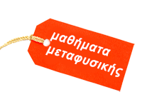

1. πίεση, ένας διακριτικός επισκέπτης...
2. σε χώμα σκληρό δε φυτεύεται σπόρος
3. ένας καθρέφτης του παρελθόντος: η πλάτη
4. η ώρα της καρδιάς
5. επεκτείνω τα ανθρώπινα όριά μου
6. η ρίζα της Ζωής, τα νεφρά
7. μελετώ τα χαμηλά και εισάγομαι στα υψηλά
8. αυτό το κεφάλι θέλει ... «σπάσιμο»!
9. σαν σκαλισμένος νεφρίτης, σαν αλεσμένη πέτρα
10. η ενεργειακή γλυπτική συνεχίζεται ...
11. εισβάλει ο μεταβλητός ωκεανός
12. ο ωκεανός του αίματος της καρδιάς!
13. στα μάτια σμίγουν ύλη και πνεύμα
14. πατήματα!
Στιγμές Σιάτσου, Το Εν, to-en.gr, Δανάη Μπάπκα,
κείμενα-εικονογράφηση: Τίλντα Νέγρη, φωτογραφίες: Βάλλυ Κωνσταντοπούλου, Copyright © Τίλντα Νέγρη, 2008
Back